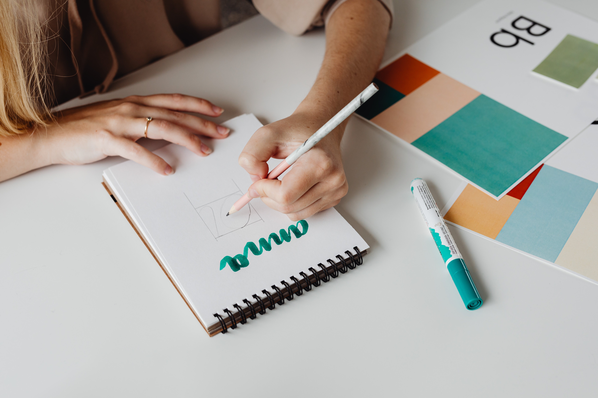

about me.....
我是林佳微，目前就讀國立台北教育大學，數學暨資訊教育學系（資訊組）大二，擅長平面設計、影片剪輯、數位行銷三大領域，興趣喜歡打排球、追劇、做甜點，曾經有在Ｑburger早餐店打工過，未來目標想成為一名ＵＸ/ＵＩ設計師。
現在為國北領袖社社長，大二接任社長對我來說是一項考驗，面臨了許多以往害怕恐懼的事情，但也是透過這樣的機會，來磨練自己出社會之前一些軟實力的培養，包括如何帶領團隊、溝通表達等能力，期許自己成為不可取待的人才！

平面設計
透過社團工作組的啟發，發現對平面設計此領域相當有熱忱，喜歡設計各種宣傳海報、logo等，因此開始透過自學AI、PS等相關繪圖軟體，曾經參與過「telegram 雙語貼圖製作」，也曾經在學習幫人設計補習班宣傳海報和logo！
擅長等級：⭐️⭐️⭐️

攝影剪輯
從小就喜歡拿著手機到處去拍下眼前的景緻，也很喜歡將拍下的照片製作成影片，從繪製腳本到拍攝到剪輯皆有相當豐富的經驗。曾負責製作過社團回顧影片，廣受好評，也製作過動畫相關作品！
擅長等級：⭐️⭐️⭐️⭐️
數位行銷
最近在發掘的領域，尚未很成熟，目前對架設網站，後台數據分析有些了解，希望未來可以成為一個多元能力的人才！
擅長等級：⭐️